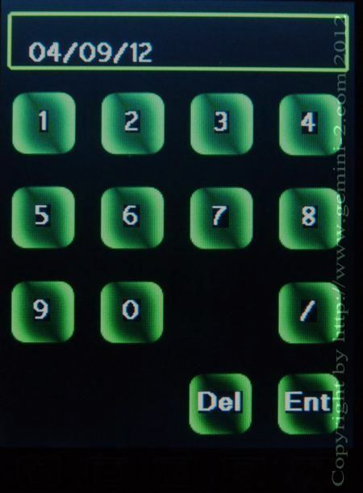

| Interactive Hand-Controller Menus - click on green button to Navigate |
|  | This is the date setting screen. You set your local
civil date. The format is Month (two digits) / Day (two digits) / Year
(two digits). NOTE: the German, French and Spanish menu use the European style of date entry: Day (two digits).Month(two digits).Year(four digits) such as 09.04.2012 Hit Ent to go back to the previous menu. NOTE: If you use Zero as the timezone offset, and your local time is not UTC, you will need to enter the correct UTC date in this menu, which may be different than your local civil date. Get UTC from World Time server |